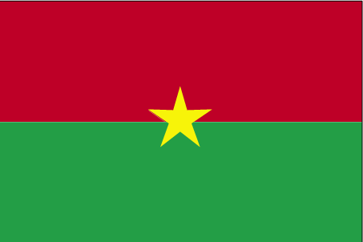
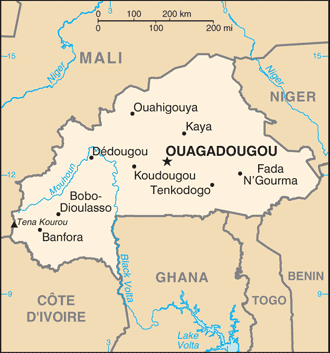
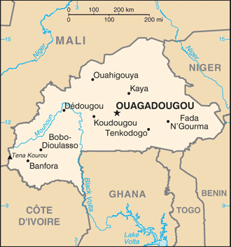
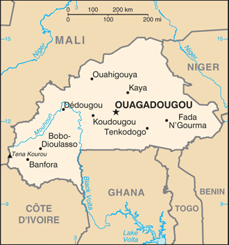

 


Africa :: BURKINA FASO
Introduction :: BURKINA FASO
-
Burkina Faso (formerly Upper Volta) achieved independence from France in 1960. Repeated military coups during the 1970s and 1980s were followed by multiparty elections in the early 1990s. Former President Blaise COMPAORE (1987-2014) resigned in late October 2014 following popular protests against his efforts to amend the Constitution's two-term presidential limit. By mid-November, a framework for an interim government was adopted under the terms of the National Transition Charter. An interim administration, led by President Michel KAFANDO and Prime Minister Yacouba Isaac ZIDA, began organizing presidential and legislative elections planned for October 2015, but these were postponed during a weeklong failed coup in September. The rescheduled elections were held on 29 November, and Roch Marc Christian KABORE was elected president in the first round. Burkina Faso's high population growth and limited natural resources result in poor economic prospects for the majority of its citizens.
Geography :: BURKINA FASO
-
Western Africa, north of Ghana13 00 N, 2 00 WAfricatotal: 274,200 sq kmland: 273,800 sq kmwater: 400 sq kmcountry comparison to the world: 76slightly larger than Coloradototal: 3,611 kmborder countries (6): Benin 386 km, Cote d'Ivoire 545 km, Ghana 602 km, Mali 1,325 km, Niger 622 km, Togo 131 km0 km (landlocked)none (landlocked)tropical; warm, dry winters; hot, wet summersmostly flat to dissected, undulating plains; hills in west and southeastmean elevation: 297 melevation extremes: lowest point: Mouhoun (Black Volta) River 200 mhighest point: Tena Kourou 749 mmanganese, limestone, marble; small deposits of gold, phosphates, pumice, saltagricultural land: 43%arable land 20.8%; permanent crops 0.3%; permanent pasture 21.9%forest: 20.4%other: 36.6% (2011 est.)550 sq km (2012)the population is concentrated in the central and southern parts of the country; the east, north, and southwest are less populatedrecurring droughtsrecent droughts and desertification severely affecting agricultural activities, population distribution, and the economy; overgrazing; soil degradation; deforestationparty to: Biodiversity, Climate Change, Climate Change-Kyoto Protocol, Desertification, Endangered Species, Hazardous Wastes, Law of the Sea, Marine Life Conservation, Ozone Layer Protection, Wetlandssigned, but not ratified: none of the selected agreementslandlocked savanna cut by the three principal rivers of the Black, Red, and White Voltas
People and Society :: BURKINA FASO
-
20,107,509note: estimates for this country explicitly take into account the effects of excess mortality due to AIDS; this can result in lower life expectancy, higher infant mortality, higher death rates, lower population growth rates, and changes in the distribution of population by age and sex than would otherwise be expected (July 2017 est.)country comparison to the world: 59noun: Burkinabe (singular and plural)adjective: BurkinabeMossi 52%, Fulani 8.4%, Gurma 7%, Bobo 4.9%, Gurunsi 4.6%, Senufo 4.5%, Bissa 3.7%, Lobi 2.4%, Dagara 2.4%, Tuareg/Bella 1.9%, Dioula 0.8%, unspecified/no answer 0.3%, other 7.2% (2010 est.)French (official), native African languages belonging to Sudanic family spoken by 90% of the populationMuslim 61.6%, Roman Catholic 23.2%, traditional/animist 7.3%, Protestant 6.7%, other/no answer 0.2%, none 0.9% (2010 est.)Burkina Faso has a young age structure – the result of declining mortality combined with steady high fertility – and continues to experience rapid population growth, which is putting increasing pressure on the country’s limited arable land. More than 65% of the population is under the age of 25, and the population is growing at 3% annually. Mortality rates, especially those of infants and children, have decreased because of improved health care, hygiene, and sanitation, but women continue to have an average of almost 6 children. Even if fertility were substantially reduced, today’s large cohort entering their reproductive years would sustain high population growth for the foreseeable future. Only about a third of the population is literate and unemployment is widespread, dampening the economic prospects of Burkina Faso’s large working-age population.Migration has traditionally been a way of life for Burkinabe, with seasonal migration being replaced by stints of up to two years abroad. Cote d’Ivoire remains the top destination, although it has experienced periods of internal conflict. Under French colonization, Burkina Faso became a main labor source for agricultural and factory work in Cote d’Ivoire. Burkinabe also migrated to Ghana, Mali, and Senegal for work between the world wars. Burkina Faso attracts migrants from Cote d’Ivoire, Ghana, and Mali, who often share common ethnic backgrounds with the Burkinabe. Despite its food shortages and high poverty rate, Burkina Faso has become a destination for refugees in recent years and hosts about 33,500 Malians as of May 2017.0-14 years: 44.88% (male 4,519,960/female 4,503,937)15-24 years: 20.07% (male 2,024,501/female 2,012,053)25-54 years: 29.42% (male 2,999,941/female 2,915,264)55-64 years: 3.2% (male 284,374/female 359,159)65 years and over: 2.43% (male 181,996/female 306,324) (2017 est.)total dependency ratio: 92.2youth dependency ratio: 87.6elderly dependency ratio: 4.6potential support ratio: 21.6 (2015 est.)total: 17.3 yearsmale: 17.1 yearsfemale: 17.4 years (2017 est.)country comparison to the world: 2203% (2017 est.)country comparison to the world: 841.2 births/1,000 population (2017 est.)country comparison to the world: 711.2 deaths/1,000 population (2017 est.)country comparison to the world: 280 migrant(s)/1,000 population (2017 est.)country comparison to the world: 99the population is concentrated in the central and southern parts of the country; the east, north, and southwest are less populatedurban population: 31.5% of total population (2017)rate of urbanization: 5.29% annual rate of change (2015-20 est.)OUAGADOUGOU (capital) 2.741 million (2015)at birth: 1.03 male(s)/female0-14 years: 1 male(s)/female15-24 years: 1.01 male(s)/female25-54 years: 1.03 male(s)/female55-64 years: 0.77 male(s)/female65 years and over: 0.6 male(s)/femaletotal population: 0.99 male(s)/female (2016 est.)19.4 yearsnote: median age at first birth among women 25-29 (2010 est.)371 deaths/100,000 live births (2015 est.)country comparison to the world: 31total: 72.2 deaths/1,000 live birthsmale: 79.3 deaths/1,000 live birthsfemale: 64.9 deaths/1,000 live births (2017 est.)country comparison to the world: 7total population: 55.9 yearsmale: 53.8 yearsfemale: 58 years (2017 est.)country comparison to the world: 2115.71 children born/woman (2017 est.)country comparison to the world: 625.5% (2016)5% of GDP (2014)country comparison to the world: 1400.05 physicians/1,000 population (2012)0.4 beds/1,000 population (2010)improved:urban: 97.5% of populationrural: 75.8% of populationtotal: 82.3% of populationunimproved:urban: 2.5% of populationrural: 24.2% of populationtotal: 17.7% of population (2015 est.)improved:urban: 50.4% of populationrural: 6.7% of populationtotal: 19.7% of populationunimproved:urban: 49.6% of populationrural: 93.3% of populationtotal: 80.3% of population (2015 est.)0.8% (2016 est.)country comparison to the world: 5195,000 (2016 est.)country comparison to the world: 443,100 (2016 est.)country comparison to the world: 40degree of risk: very highfood or waterborne diseases: bacterial and protozoal diarrhea, hepatitis A, and typhoid fevervectorborne disease: dengue fever, malaria, and yellow feverwater contact disease: schistosomiasisrespiratory disease: meningococcal meningitisanimal contact disease: rabies (2016)5.6% (2016)country comparison to the world: 17519.2% (2016)country comparison to the world: 243.9% of GDP (2015)country comparison to the world: 128definition: age 15 and over can read and writetotal population: 36%male: 43%female: 29.3% (2015 est.)total: 8 yearsmale: 8 yearsfemale: 7 years (2013)
Government :: BURKINA FASO
-
conventional long form: noneconventional short form: Burkina Fasolocal long form: nonelocal short form: Burkina Fasoformer: Upper Volta, Republic of Upper Voltaetymology: name translates as "Land of the Honest (Incorruptible) Men"presidential republicname: Ouagadougougeographic coordinates: 12 22 N, 1 31 Wtime difference: UTC 0 (5 hours ahead of Washington, DC, during Standard Time)13 regions; Boucle du Mouhoun, Cascades, Centre, Centre-Est, Centre-Nord, Centre-Ouest, Centre-Sud, Est, Hauts-Bassins, Nord, Plateau-Central, Sahel, Sud-Ouest5 August 1960 (from France)Republic Day, 11 December (1958); note - commemorates the day that Upper Volta became an autonomous republic in the French Communityhistory: several previous; latest approved by referendum 2 June 1991, adopted 11 June 1991, temporarily suspended late October to mid-November 2014amendments: proposed by the president, by a majority of National Assembly membership, or by petition of at least 30,000 eligible voters submitted to the Assembly; passage requires at least three-fourths majority vote in the Assembly; failure to meet that threshold requires majority voter approval in a referendum; constitutional provisions on the form of government, the multiparty system, and national sovereignty cannot be amended; amended several times, last in 2012 (2017)civil law based on the French model and customary lawhas not submitted an ICJ jurisdiction declaration; accepts ICCt jurisdictioncitizenship by birth: nocitizenship by descent only: at least one parent must be a citizen of Burkina Fasodual citizenship recognized: yesresidency requirement for naturalization: 10 years18 years of age; universalchief of state: President Roch Marc Christian KABORE (since 29 December 2015)head of government: Prime Minister Paul Kaba THIEBA (since 6 January 2016)cabinet: Council of Ministers appointed by the president on the recommendation of the prime ministerelections/appointments: president elected by absolute majority popular vote in two rounds if needed for a 5-year term (eligible for a second); election last held on 29 November 2015 (next scheduled for November 2020); prime minister appointed by the president with consent of the National Assemblyelection results: Roch Marc Christian KABORE elected president in one round; percent of vote - Roch Marc Christian KABORE (MPP) 53.5%, Zephirin DIABRE (UPC) 29.6%, Tahirou BARRY (PAREN) 3.1%. Benewende Stanislas SANKARA (UNIR-MS) 2.8%, other 10.9%description: unicameral National Assembly (127 seats; members directly elected in multi-seat constituencies by proportional representation vote to serve 5-year terms)elections: last held on 29 November 2015 (next to be held in 2020)election results: percent of vote by party - NA; seats by party - MPP 55, UPC 33, CDP 18, Union for Rebirth/Sankarist Party 5, ADF/RDA 3, NTD 3, other 10highest court(s): Supreme Court of Appeals or Cour de Cassation (consists of NA judges); Council of State (consists of NA judges); Constitutional Council or Conseil Constitutionnel (consists of the council president and 9 members)judge selection and term of office: Supreme Court judge appointments mostly controlled by the president of Burkina Faso; judges have no term limits; Council of State judge appointment and tenure NA; Constitutional Council judges appointed by the president of Burkina Faso upon the proposal of the minister of justice and the president of the National Assembly; judges appointed for 9-year terms with one-third of membership renewed every 3 yearssubordinate courts: Appeals Court; High Court; first instance tribunals; district courts; specialized courts relating to issues of labor, children, and juveniles; village (customary) courtsAfrican Democratic Rally/Alliance for Democracy and Federation or ADF/RDA [Gilbert Noel OUEDRAOGO]African People’s Movement or MAP [Victorien TOUGOUMA]Congress for Democracy and Progress or CDP [Achille TAPSOBA]Le Faso Autrement [Ablasse OUEDRAOGO]New Alliance of the Faso or NAFA [Rasmane OUEDRAOGO]New Time for Democracy or NTD [Vincent DABILGOU]Organization for Democracy and Work or ODT [Mahamoudou SAWADOGO]Party for Development and Change or PDC [Saran SEREME]Party for Democracy and Progress-Socialist Party or PDP-PS [Francois O. KABORE]Party for Democracy and Socialism/Metba or PDS/Metba [Philippe OUEDRAOGO]Party for National Renaissance or PAREN [Tahirou BARRY]People's Movement for Progress or MPP [Roch March Christian KABORE]Rally for Democracy and Socialism or RDS [Francois OUEDRAOGO]Rally for the Development of Burkina or RDB [Celestin Saidou COMPAORE]Rally of Ecologists of Burkina Faso or RDEB [Adama SERE]Union for a New Burkina or UBN [Yacouba OUEDRAOGO]Union for Progress and Change or UPC [Zephirin DIABRE]Union for Rebirth - Sankarist Movement or UNIR-MS [Benewende Stanislas SANKARA]Union for the Republic or UPR [Toussaint Abel COULIBALY]Youth Alliance for the Republic and Independence or AJIR [Adama KANAZOE]Balai Citoyen [Guy Herve KAM]Burkinabe General Confederation of Labor or CGTB [Bassolma BAZIE]Burkinabe Movement for Human Rights or MBDHP [Chrysigone ZOUGMORE]Burkinabe Society for Constitutional Law or SBDC [Abdoulaye SOMA]Center for Democratic Governance or CGD [Thomas OUEDRAOGO]Coalition for African Renaissance or CAR [Herve OUATTARA]National Independent Union of Burkinabe Magistrates or SAMAB [Augustin LOADA]National Union for Health Workers or SYNTSHANational Union for Primary Education Teachers or SYNATEBother: watchdog/political action groups throughout the countryACP, AfDB, AU, CD, ECOWAS, EITI (compliant country), Entente, FAO, FZ, G-77, IAEA, IBRD, ICAO, ICC (NGOs), ICCt, ICRM, IDA, IDB, IFAD, IFC, IFRCS, ILO, IMF, Interpol, IOC, IOM, IPU, ISO, ITSO, ITU, ITUC (NGOs), MIGA, MINUSMA, MONUSCO, NAM, OIC, OIF, OPCW, PCA, UN, UNAMID, UNCTAD, UNESCO, UNIDO, UNISFA, UNITAR, UNWTO, UPU, WADB (regional), WAEMU, WCO, WFTU (NGOs), WHO, WIPO, WMO, WTOchief of mission: Ambassador Seydou KABORE (since 18 January 2017)chancery: 2340 Massachusetts Avenue NW, Washington, DC 20008telephone: [1] (202) 332-5577FAX: [1] (202) 667-1882chief of mission: Ambassador Andrew YOUNG (since 1 December 2016)embassy: Rue 15.873, Avenue Sembene Ousmane, Ouaga 2000, Secteur 15mailing address: 01 B. P. 35, Ouagadougou 01; pouch mail - US Department of State, 2440 Ouagadougou Place, Washington, DC 20521-2440telephone: [226] 25-49-53-00FAX: [226] 25-49-56-28two equal horizontal bands of red (top) and green with a yellow five-pointed star in the center; red recalls the country's struggle for independence, green is for hope and abundance, and yellow represents the country's mineral wealthnote: uses the popular Pan-African colors of Ethiopiawhite stallion; national colors: red, yellow, greenname: "Le Ditanye" (Anthem of Victory)lyrics/music: Thomas SANKARAnote: adopted 1974; also known as "Une Seule Nuit" (One Single Night); written by the country's president, an avid guitar player
Economy :: BURKINA FASO
-
Burkina Faso is a poor, landlocked country that depends on adequate rainfall. About 90% of the population is engaged in subsistence farming and cotton is the main cash crop. The country has few natural resources and a weak industrial base.Cotton and gold are Burkina Faso’s key exports - gold has accounted for about three-quarters of the country’s total export revenues. Burkina Faso’s economic growth and revenue depends largely on production levels and global prices for the two commodities. The Burkinabe economy experienced high levels of growth over the last few years, and the country has seen an upswing in gold exploration, production, and exports.Burkina Faso experienced a number of public protests over the high cost of living, corruption, and other socioeconomic issues in 2013, while the fall of the COMPAORE government in 2014 and failed coup in September 2015 disrupted economic activity and strained government finances. A new three-year IMF program, approved in 2013, was recently completed. Discussions are currently underway on a new program. Political insecurity in neighboring Mali, unreliable energy supplies, and poor transportation links pose long-term challenges.$32.97 billion (2016 est.)$30.75 billion (2015 est.)$29.24 billion (2014 est.)note: data are in 2016 dollarscountry comparison to the world: 126$12.12 billion (2016 est.)5.9% (2016 est.)4% (2015 est.)4.2% (2014 est.)country comparison to the world: 30$1,800 (2016 est.)$1,700 (2015 est.)$1,700 (2014 est.)note: data are in 2016 dollarscountry comparison to the world: 2107.7% of GDP (2016 est.)5.3% of GDP (2015 est.)12.7% of GDP (2014 est.)country comparison to the world: 42household consumption: 56.5%government consumption: 22.4%investment in fixed capital: 29.3%investment in inventories: 4%exports of goods and services: 25.2%imports of goods and services: -37.4% (2016 est.)agriculture: 32.6%industry: 22.2%services: 45.2% (2016 est.)cotton, peanuts, shea nuts, sesame, sorghum, millet, corn, rice; livestockcotton lint, beverages, agricultural processing, soap, cigarettes, textiles, gold5.5% (2016 est.)country comparison to the world: 438.501 millionnote: a large part of the male labor force migrates annually to neighboring countries for seasonal employment (2016 est.)country comparison to the world: 60agriculture: 90%industry and services: 10% (2000 est.)77% (2004)country comparison to the world: 21640.1% (2009 est.)lowest 10%: 2.9%highest 10%: 32.2% (2009 est.)39.5 (2007)48.2 (1994)country comparison to the world: 66revenues: $2.379 billionexpenditures: $2.759 billion (2016 est.)20% of GDP (2016 est.)country comparison to the world: 157-3.2% of GDP (2016 est.)country comparison to the world: 12532.5% of GDP (2016 est.)32.5% of GDP (2015 est.)country comparison to the world: 152calendar year-0.2% (2016 est.)1% (2015 est.)country comparison to the world: 444.25% (31 December 2010)4.25% (31 December 2009)country comparison to the world: 875.3% (31 December 2016 est.)5.15% (31 December 2015 est.)country comparison to the world: 135$2.274 billion (31 December 2016 est.)$2.124 billion (31 December 2015 est.)country comparison to the world: 127$4.228 billion (31 December 2016 est.)$4 billion (31 December 2015 est.)country comparison to the world: 132$3.205 billion (31 December 2016 est.)$3.192 billion (31 December 2015 est.)country comparison to the world: 135$NA$-828 million (2016 est.)$-890.2 million (2015 est.)country comparison to the world: 115$2.641 billion (2016 est.)$2.364 billion (2015 est.)country comparison to the world: 129gold, cotton, livestockSwitzerland 65.7%, India 6.3%, South Africa 5.2%, Singapore 4.6% (2016)$2.802 billion (2016 est.)$2.606 billion (2015 est.)country comparison to the world: 146capital goods, foodstuffs, petroleumChina 12.2%, Cote dIvoire 8.2%, Japan 7.8%, France 7.1%, Netherlands 4.5%, Spain 4.2%, India 4.1%, Russia 4% (2016)$50.9 million (31 December 2016 est.)$67.3 million (31 December 2015 est.)country comparison to the world: 170$2.88 billion (31 December 2016 est.)$2.627 billion (31 December 2015 est.)country comparison to the world: 143Communaute Financiere Africaine francs (XOF) per US dollar -593.01 (2016 est.)593.01 (2015 est.)591.45 (2014 est.)494.42 (2013 est.)510.53 (2012 est.)
Energy :: BURKINA FASO
-
population without electricity: 14,100,000electrification - total population: 17%electrification - urban areas: 56%electrification - rural areas: 1% (2013)944 million kWh (2015 est.)country comparison to the world: 1541.321 billion kWh (2015 est.)country comparison to the world: 1510 kWh (2016 est.)country comparison to the world: 210443 million kWh (2015 est.)country comparison to the world: 84306,000 kW (2015 est.)country comparison to the world: 15786.9% of total installed capacity (2015 est.)country comparison to the world: 700% of total installed capacity (2015 est.)country comparison to the world: 20010.5% of total installed capacity (2015 est.)country comparison to the world: 1183.3% of total installed capacity (2015 est.)country comparison to the world: 1090 bbl/day (2016 est.)country comparison to the world: 2060 bbl/day (2014 est.)country comparison to the world: 2050 bbl/day (2014 est.)country comparison to the world: 2040 bbl (1 January 2017 es)country comparison to the world: 2060 bbl/day (2014 est.)country comparison to the world: 20822,000 bbl/day (2015 est.)country comparison to the world: 1360 bbl/day (2014 est.)country comparison to the world: 20920,890 bbl/day (2014 est.)country comparison to the world: 1180 cu m (2013 est.)country comparison to the world: 2060 cu m (2013 est.)country comparison to the world: 1420 cu m (2013 est.)country comparison to the world: 2020 cu m (2013 est.)country comparison to the world: 2020 cu m (1 January 2014 es)country comparison to the world: 2021.4 million Mt (2013 est.)country comparison to the world: 157
Communications :: BURKINA FASO
-
total subscriptions: 64,000subscriptions per 100 inhabitants: less than 1 (July 2016 est.)country comparison to the world: 141total: 15,404,040subscriptions per 100 inhabitants: 79 (July 2016 est.)country comparison to the world: 74general assessment: system includes microwave radio relay, open-wire, and radiotelephone communication stationsdomestic: fixed-line connections stand at less than 1 per 100 persons; mobile-cellular usage, fostered by multiple providers, is increasing steadily from a low baseinternational: country code - 226; satellite earth station - 1 Intelsat (Atlantic Ocean) (2016)2 TV stations - 1 state-owned and 1 privately owned; state-owned radio runs a national and regional network; substantial number of privately owned radio stations; transmissions of several international broadcasters available in Ouagadougou (2007).bftotal: 2,723,950percent of population: 14.0% (July 2016 est.)country comparison to the world: 125
Transportation :: BURKINA FASO
-
number of registered air carriers: 1inventory of registered aircraft operated by air carriers: 3annual passenger traffic on registered air carriers: 122,589annual freight traffic on registered air carriers: 55,868 mt-km (2015)XT (2016)23 (2013)country comparison to the world: 133total: 2over 3,047 m: 12,438 to 3,047 m: 1 (2017)total: 211,524 to 2,437 m: 3914 to 1,523 m: 13under 914 m: 5 (2013)total: 622 kmnarrow gauge: 622 km 1.000-m gaugenote: another 660 km of this railway extends into Cote d'Ivoire (2014)country comparison to the world: 109total: 15,272 kmnote: does not include urban roads (2010)country comparison to the world: 122
Military and Security :: BURKINA FASO
-
1.23% of GDP (2016)1.33% of GDP (2015)1.43% of GDP (2014)1.39% of GDP (2013)1.32% of GDP (2012)country comparison to the world: 73Army, Air Force of Burkina Faso (Force Aerienne de Burkina Faso, FABF), National Gendarmerie (2011)18 years of age for voluntary military service; no conscription; women may serve in supporting roles (2013)
Transnational Issues :: BURKINA FASO
-
adding to illicit cross-border activities, Burkina Faso has issues concerning unresolved boundary alignments with its neighbors; demarcation is currently underway with Mali; the dispute with Niger was referred to the ICJ in 2010, and a dispute over several villages with Benin persists; Benin retains a border dispute with Burkina Faso around the town of Koualourefugees (country of origin): 24,083 (Mali) (2017)current situation: Burkina Faso is a source, transit, and destination country for women and children subjected to forced labor and sex trafficking; Burkinabe children are forced to work as farm hands, gold panners and washers, street vendors, domestic servants, and beggars or in the commercial sex trade, with some transported to nearby countries; to a lesser extent, Burkinabe women are recruited for legitimate jobs in the Middle East or Europe and subsequently forced into prostitution; women from other West African countries are also lured to Burkina Faso for work and subjected to forced prostitution, forced labor in restaurants, or domestic servitudetier rating: Tier 2 Watch List – Burkina Faso does not fully comply with the minimum standards for the elimination of trafficking; however, it is making significant efforts to do so; law enforcement efforts decreased in 2014, with a significant decline in trafficking prosecutions (none for forced begging involving Koranic school teachers – a prevalent form of trafficking) and no convictions, a 2014 law criminalizing the sale of children, child prostitution, and child pornography is undermined by a provision allowing offenders to pay a fine in lieu of serving prison time proportionate to the crime; the government sustained efforts to identify and protect a large number of child victims, relying on support from NGOs and international organizations; nationwide awareness-raising activities were sustained, but little was done to stop forced begging (2015)